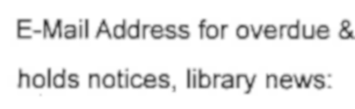
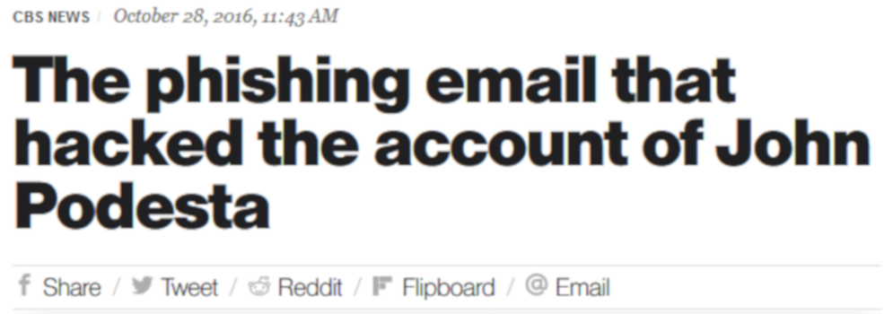
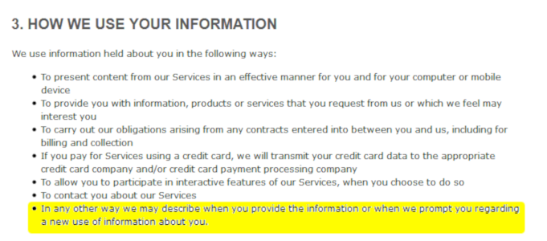
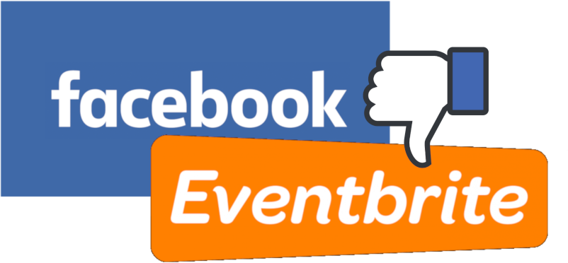

PRIVACY IS DEAD
Can i have your password?
TLA APR 2019
bryan.n.jones@nashville.gov
ETHICS
UN DeclaratIon of Human RIghts
IFLA Code of EthIcs for LIbrarIans & Other InformatIon Workers
US ConstItutIon
Amendment #4ALA Code of EthIcs
Article #3ALA BIll of RIghts
Article #7TLA Core Values
Value #2TLA IF CommIttee charter
ETHICS
& THE LAW


The
Privacy
PARADOX
ARE YOU A DATA MINER?
OR A DATA MINEE?
dark patterns

What is bad about it?
malware / phishing / doxing
What does this have to do with libraries?
crappy vendor contracts
public internet
public nets

more public nets
I'll just leave this here.
What can we do about it?
DuckDuckGo
Tor Browser
Wipe'em! Wipe'em good!
Google Analytics
Turn off 'Display Features'
Turn off 'Remarketing'
Turn off 'Advertising Reporting'
Anonymize IP settings
Set the data retention to the shortest period
Make opting-out as easy as possible